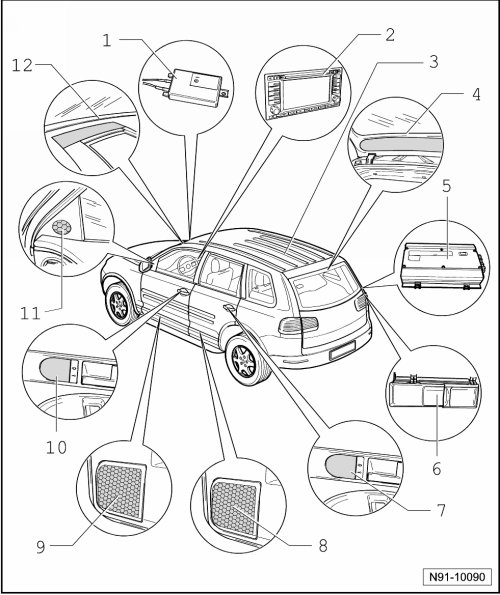

RNS 510 Radio Navigation System Overview
RNS 510 Radio Navigation System Overview

1 - Telephone, navigation or telephone and navigation antenna
• Installed in right fender above headlamp
• The antenna is a roof antenna
• Additional information in chapter, antenna systems, refer to --> [ Antenna Systems ] Antenna Systems
2 - Radio/Navigation Display Control Module (J503) (radio navigation system)
• Installed in center console
• Multi-pin connector assignments, refer to --> [ Connectors on Radio Navigation System Overview ] Connectors on Radio Navigation System Overview.
• Removing and installing, refer to --> [ Radio Navigation System 2 with 6.5 inch Color Display ] Radio Navigation System 2 with 6.5 inch Color Display
3 - Antenna Selection Control Module (J515)
• Installed under rear of headliner
• Additional information in chapter, refer to --> [ Antenna Systems ] Antenna Systems
4 - Antenna Amplifier 2 (R111) and Antenna Amplifier 3 (R112)
• Installed in upper section of rear lid
• Additional information in chapter, refer to --> [ Antenna Systems ] Antenna Systems
5 - Digital Sound System Control Module (J525)
• Installed in right of luggage compartment
• Additional information in "Sound 1" and "Sound 2" sound systems amplifier chapter, refer to --> [ CD Changer ] Description and Operation
6 - CD Changer (R41)
• Installed in right of luggage compartment
• Additional information in CD changer chapter, refer to --> [ CD Changer ] Description and Operation
7 - Left Rear Midrange Speaker (R105) and Right Rear Midrange Speaker (R106)
• Installed in rear doors near door opener
• Additional information in speaker systems chapter, refer to --> [ Speaker Systems ] Description and Operation
8 - Left Rear Bass Speaker (R15) and Right Rear Bass Speaker (R17)
• In bottom of rear doors
• Additional information in speaker systems chapter, refer to --> [ Speaker Systems ] Description and Operation
9 - Left Front Bass Speaker (R21) and Right Front Bass Speaker (R23)
• Installed in bottom of front doors
• Additional information in speaker systems chapter, refer to --> [ Speaker Systems ] Description and Operation
10 - Left Front Midrange Speaker (R103) and Right Front Midrange Speaker (R104)
• Installed in front doors near door opener
• Additional information in speaker systems chapter, refer to --> [ Speaker Systems ] Description and Operation
11 - Left Front Treble Speaker (R20) and Right Front Treble Speaker (R22)
• Installed in front doors in triangular mirror trim
• Additional information in speaker systems chapter, refer to --> [ Speaker Systems ] Description and Operation
12 - Center Mid/High Range Loudspeaker (R158)
• Installed in center of instrument panel
• Only installed in conjunction with the "Sound 1" or " Sound 2" system
• Additional information in speaker systems chapter, refer to --> [ Speaker Systems ] Description and Operation